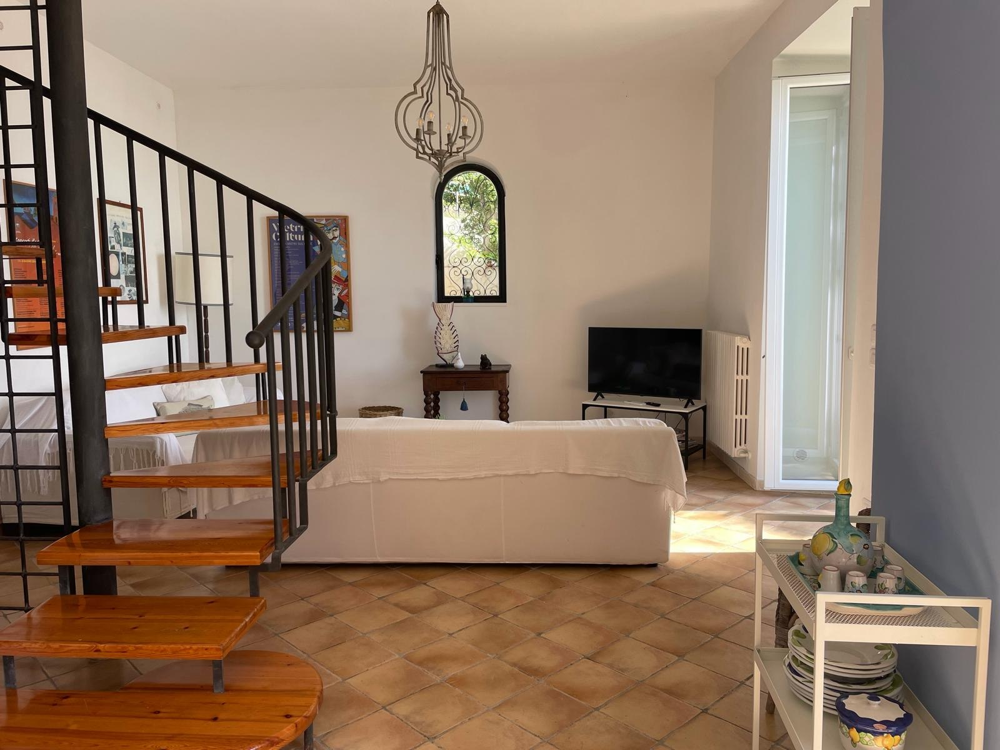

Famiglie e gruppi
Una villa per famiglie vicino Vietri sul Mare
Villa San Vito è una casa privata su tre livelli, pensata per condividere il soggiorno con famiglia o amici senza rinunciare a spazi personali, terrazze, giardino e quiete.

Spazi
Una casa intera da vivere insieme
La zona giorno, la cucina attrezzata, le camere, lo studio e gli esterni permettono di alternare momenti condivisi e pause più intime durante il soggiorno.
La posizione a Raito consente di rientrare in un contesto più tranquillo dopo giornate al mare, escursioni in Costiera o visite a Salerno, Pompei e Paestum.
Organizzazione
Una base pratica per un viaggio in compagnia
Per famiglie e gruppi, la combinazione di casa completa, parcheggio, posizione panoramica e collegamenti verso la Costiera rende il soggiorno più flessibile.
Vai alle prenotazioni